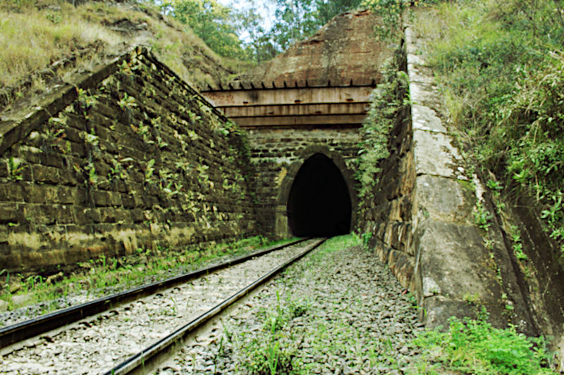
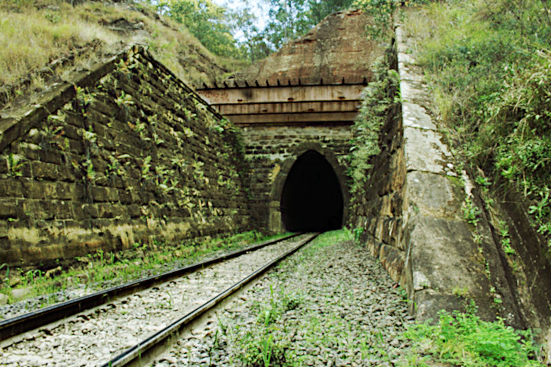

Survey Office, Brisbane
The Fassifern
In the second half of the nineteenth century, many people who migrated to Queensland settled in the Fassifern. Even people who had first landed in other districts eventually took up land there.
The Fassifern Valley
The name "Fassifern Valley" is much used but without really describing where that valley actually is, other than being in the South East of Queensland, somewhat inland from Brisbane. The first mentions of Fassifern Valley came from newspapers of the early 20th century to refer to farms hewn out of the the brigalow scrub in the Fassifern district, aptly called the Fassifern Scrub. The articles speak glowingly of a beautiful valley, rich in fertile soils. The area grew into a parish, a district and an electorate but Fassifern Valley was not mentioned with any of these.In an attempt to locate it geographically, it's fairly well agreed to have its western boundary at the Little Liverpool Range. To the north is the district of Ipswich. On the south is the northern border of New South Wales. Yet the eastern side is a little blurry. Some say it stops at the Teviot Range yet many of the places supposedly in the Fassifern Valley lie on the eastern side of that range, perhaps the valley spread as far over as the Dugandan Range.
Running through the middle are the Bremer River and a number of creeks such as Warrill Creek, Reynolds Creek, Teviot Brook, Burnett Creek and Washpool Gully. It is now also home to Lake Moogerah and the Maroon Dam.
 The Victoria Tunnel

The Victoria Tunnel

The Little Liverpool Range is also well known for being a hindrance to the construction of the Ipswich to Toowoomba rail line. To overcome the problem two tunnels were burrowed through the range, the first of which was the 120m long Little Liverpool Tunnel, and the other one being the 500m long Victoria Tunnel, the longest and oldest rail tunnel in Queensland. Being stone masons, the Schneider family, who arrived in 1864 and 1865 from Wuerttemberg in Germany, contributed by cutting the stone used for the Victoria Tunnel.
The official boundaries of the Electoral District of Fassifern, which existed from 1873 to 1992, very closely align with those of the Fassifern Valley itself. On the other hand, The Parish of Fassifern is closer to the original Fassifern Run established by John Cameron in 1842. As specified by government regulations, both a parish and a run were confined to about 25 square miles in size.
Volcanoes of South East Queensland
The extent of The Main Range Volcano
is shown in red
The Making of the Fassifern Valley in Prehistory
Long before Queensland separated from New South Wales, Australia had separated from the super continent of Gondwana, a huge land mass connecting Australia and the Antarctic. The drift started about 300 million years ago and the land masses were completely disconnected some 60 to 86 million years ago. Through the study of exposed land in the Antarctic there have been major discoveries revealing the previous existence of marsupials and similar rock and soil to Australia.As a result of the migration of the Australian continental land mass over the tectonic plate known as the Australian Plate, enormous shield volcanoes were formed in what is now South East Queensland, in particular the Main Range Volcano, where Fassifern now lies, the Focal Peak Volcano near Mount Barney and the Tweed Volcano, centered on Mt Warning in the Tweed district. The first to erupt was the Main Range Volcano and resulted in much molten volcanic rock (mostly basalt) erupting and flowing over what is now the fertile valley of the Fassifern.
The Original Inhabitants
Well before the British invasion of Australia, the Fassifern was occupied by the Ugarapul (a modern term, otherwise Yaggerabul, Yugarabul etc) people who knew it by the name of Yagera (or Yaggera etc). How long they had lived there is uncertain but it is surmised that aboriginal people have inhabited Australia for the past 65,000 years or so, having also survived the ice-age.Although most early 'settlers' have glowing reports about mixing well with the original inhabitants, their established way of life, or possibly their sheer existence conflicted most of all with the very English mentality of the Crown's newly appointed authorities, who came bearing guns, and used them openly against the 'natives'. The aim, of course, was to drive them and any native animals and plants out of existence.
Government surveyors adopted many aboriginal place names which continue being used today. The following lists some of those in the Fassifern Valley (derived from "Aboriginal Placenames of South East Queensland" - Qld Govt) from the Yugera / Yugarabul language.

Map showing the Yagera territory of the Ugarapul
which includes what is now called Fassifern
in South East Queensland
(white lettering shows current English names)
As remarked in "An environmental history of Moreton Bay":
An Artist's Impressions of Brigalow Country (2023)
Flora and Fauna
The Fassifern Valley has a rather unique history when it comes to its vegetation and inhabitants and even today, some rare examples are still being discovered. After decades of clearing for cultivation, some remaining 'untouched' sections of rainforest and bushland are now part of national parks and wildlife reserves. Once upon a time, sub-tropical rainforests, eucalypts, vines, brigalow and heath were growing abundantly over the peaks, gorges, cliffs, ridges and plains of the Fassifern. Mount French is still home to the remaining brigalow scrub which previously dominated the area. Rare lichens and slender milkvines unique to Fassifern are still found in protected pockets on higher ground.Black-breasted Button-quail
At the start of the eighteenth century, explorers in their travel notes often described overwhelmingly large groups of wallabies, wallaroos, emus, cockatoos, kangaroos, koalas and so on, which are unfortunately no longer to be seen in such quantities, having been driven off by aggressive culling and agriculture. The first pastoral runs were set up by squatters who drove their livestock into the plains for free. As time passed by the government demanded licensing of these runs at a nominal fee of usually 10 pounds per year, simply to keep track of who was where. Those runs eventually turned into leases and then selections, all controlled by the systematic occupation of the land by European migrants.
Exploration

Allan Cunningham

Captain Patrick Logan
.jpg)
Cunningham’s Gap
1856, by Conrad Martens
Cunningham’s Map
1820, with Fassifern at bottom-left (explored Winter of 1828)
Climate
Fassifern, being in South East Queensland has a sub-tropical climate influenced by tropical systems from the north and fluctuations of the high pressure ridge to the south which bring about warm wet summers and mild dry winters.Places Named Fassifern
The name Fassifern can refer to many different places or political entities within this particular region. Following is a list of different uses of the name but generally are all referring to places within the Fassifern Valley.and formed 2011 when Flinders District was re-organised, till 2019
Moreton Bay Penal Settlement, 1835
The Fassifern Run licensed to John Cameron (c.1840s).
In yellow are the runs belonging to his brothers-in-law.
Altogether they cover most of the Fassifern Valley.
The Fassifern Run as surveyed by the Queensland Government showing the two halves of leasehold and reclaimed land (1872).
In 1868 the Fassifern Run had absorbed The Tarome and Moogerah Runs under the partnership of the Wienholt Brothers and J. Hardie.
The Beginning of Fassifern, The Run and The Neighbours
For almost two decades prior to British settlement of the region, the area now known as Fassifern Valley was included in the administration of the Moreton Bay Penal Settlement of New South Wales. The settlement stretched from Stradbroke Island, across Redland Bay, through Brisbane and on to Limestone (Ipswich). As such, no land within 50 miles of these places could be occupied, namely by any squatters wishing to depasture their livestock. This all changed on 10th February, 1842 when the Governor of New South Wales, George Phipps, declared the penal settlement to be closed and the district open for free settlement. On the 5th of May, 1842, Governor Phipps proclaimed the Moreton Bay District to have come into existence.John Cameron (1811-1862) didn't waste time to become the first to take up land in this new frontier having been granted a Depasturing License running from July 1, 1842 to June 30, 1843. Cameron was born 11 August 1811 in Stirling, Scotland and was the son of the former soldier, early colonist and pastoralist, Hugh Cameron (1774-1851) and wife Jessie Robertson (1789-1873), who had settled on 1280 acres they named Kingdon Ponds, near Scone in the Hunter Valley. Hugh's close friend, the Surveyor General, Thomas Livingston Mitchell, who had recommended the location, was instrumental in fulfilling Hugh's wish to establish a town alongside the property and name it Scone, after where the Stone of Destiny was held in Scotland.
In 1836, John had been the first settler in New England, having driven a herd of 500 cattle up from the Hunter Valley to his new property located at Abington Creek which he named Lochiel Run but was later known as Abington Station. Lochiel was a historic place just east of the Fassifern near Fort William in Scotland, and was once home to the Clan Cameron's chieftain, Donald Cameron. Another story has John taking up Bannockburn Station near Inverell in 1837, where his father Hugh was to remain after John moved to Fassifern. Soon to follow Cameron to New England were more Hunter Valley pastoralists. For instance, agent John Falconer took up Falconer Plain for Donald McIntyre as well as Guyra for Peter McIntyre.
Herd grazing at Coochin-Coochin
1850 Marriage of John Cameron Esq. of Undulla and Emmeline Clark
1861 The Passing of Emmeline
1887 Memories of John Cameron,
"the kindest and best of fathers to his little ones"
1847 Fassifern up for sale
(was bought by William Kent in 1848)
Fassifern 24,000 acres (and Undulla 41,030 acres)
John Cameron (1811-1862)
married Emmeline Clark (1826-1860) in 1850
Moogerah 18,000 acres
Margaret Cameron (1813-1846)
married Robert Coulson in 1833
Tarome 20,480 acres
Catherine Cameron (1824-1895)
married William Turner (1817-1874) in 1842
Dugandan 18,000 acres
Jessie Cameron (1820-1907)
married Macquarie McDonald (1817-1855) in 1843
Melcombe/Maroon 20,000 acres
Jane Cameron (1817-1893)
married John Rankin (1811-1892) in 1839
NOTES: Macquarie McDonald's brother,
Campbell Livingstone McDonald,
married Emmeline Clark's sister, Rachel
(and ran Dugandan & Bromelton)
Macquarie McDonald's sister Elizabeth,
married Robert Coulson's brother, Henry
(Henry was said to be 'rich and haughty')
John Cameron sold Fassifern in 1848 to William Kent, a cousin of John Kent, who had owned Coochin Coochin. In 1849, John Cameron managed Moogerah for John Richardson and then took over Undulla lying east of Mt Flinders. In 1850 John Cameron Esq. of Undulla married Emmeline Clark in Brisbane. John's parents had obviously moved in with them, his father having been buried on Undulla, the next year, in 1851.
April 1, 1862 - Assessed Runs
John Cameron's Undulla Run
The children of John and Emmeline Cameron were:
1. John Hugh Cameron, b. 3 Jun 1851, Undulla, d. 31 Jul 1933 (aged 82)
2. Emmeline Julia Cameron, b. 13 May 1852, Undulla, d. 1918, Brisbane (aged 65)
3. William Robertson Cameron, b. 7 Aug 1853, Undulla, d. 1853
4. Mary Alberta Cameron, b. 12 Feb 1855, Undulla, d. 5 Jul 1935, Brisbane (aged 80)
5. Harry Sanders Cameron, b. 15 Jul 1856, Undulla, d. 10 Oct 1900, Pentland, Qld (aged 44)
6. Thomas Robertson Cameron, b. 14 Sep 1857, Undulla, d. 22 Oct 1922 (aged 65)
7. Ida Cameron, b. 1 Jan 1859, Undulla
8. Jessie Jane Cameron, b. 10 Jul 1860, Undulla
Leasehold, Freehold, Selection
The Fassifern Estate as advertised in 1906
With Queensland having separated from New South Wales and becoming a colony in its own right, changes in government policy set forth a scheme to encourage settlement of the land formally only in the hands of a few run owners who had originally been squatters. All of the runs in the district, were at first split in half, with one part being leased, usually to the former lessee, and the other, called reclaimed land, which was then surveyed into smaller blocks and made available for selection by private people, namely migrants. Eventually all the land followed suit.
Needless to say, wealthy pastoralists and businessmen such as George Thorn, Benjamin Cribb and his brother-in-law, John Foote, as well as the Wienholt brothers, nabbed the opportunity first and snatched up an inordinate number of blocks which had become available. Before the full scale advertising of the estate, many German migrants saw an opportunity to take up the 'cheaper' land and work hard clearing the brigalow scrub country unwanted by those who preferred something easy.
In 1944, in a series of letters to the Queensland Times, Thos. W. Hardcastle of Carney's Creek via Boonah, recalled that the McDonald brothers cut the first track through the scrub towards Ipswich. At that time it was only a packhorse track. In the early days, the mail was run from Ipswich to Mt. Lindsay to meet up with the mail coming from New South Wales. It was simply tipped out on the side of the road and the settlers had to rummage through it to pick out their own mail.
The Parish of Fassifern (1967/70)
The Stations on the Fassifern Branch, "Boonah Line"
Boonah rail station
Development of The Fassifern
As to be expected, the more the land was settled, the more commercial it became. Towns, villages and other settlements sprang up like mushrooms all over the Fassifern to deal with the increased needs, stemming mostly from private enterprise, especially in the agricultural arena. These places gradually became networked by roads and eventually by rail. In fact, it was the railway line and its stations which contributed greatly to the naming and growth of particular communities which, as time went by, became important centres for the district. The movement of goods in and out of the region was one of the most important facets of early life in this budding and blossoming district.On July 10, 1882, the Fassifern Railway Line was officially opened and hailed as the first agricultural branch line to be built in Queensland. Initially it ran for 17 miles from Ipswich to Harrisville but by 1887 had been extended another 18 miles to reach Boonah and Dugandan, described then as a scrub farming district.
That year, a reporter for the Queensland Times captured the spirit of the new line by recounting impressions of it as a passenger on the train passing along it just before the line officially opened. He describes the countryside in glowing detail and includes some details about the residents, such as:
(the entire text can be read in the box to the right)
Kulgun finally gets a dignified name (in 1908)
Fassifern Junction (where the Dugandan line splits from the Main Line railway), Shillito & Sons siding, Spanns siding, Little Ipswich, Noble Vale No 6. Colliery siding, Cattle siding, Churchill, Loamside, Hampstead, Purga, Goolman, Hillside, Rockton, Peak Crossing, Flinders, Churchbank, Harrisville, Wilsons Plains, Radford, Munbilla, Junction with Mount Edwards railway line, Anthony, Blantyre, Roadvale, Kulgun, Teviotville, Hoya, Boonah, Dugandan
Additionally were those of the branch line to Mount Edwards:
Waraperta/Warperta, Kalbar, Warumkarie, Fassifern Valley, Morwincha, Aratula, Mt.Edwards
Here is a list of the settlements in the Fassifern:
Allandale, Anthony, Aratula, Blantyre, Boonah, Bunburra, Bunjurgen, Charlwood, Clumber, Coleyville, Coulson, Croftby, Dugandan, Fassifern, Fassifern Valley, Frazerview, Frenches Creek, Harrisville, Hoya, Kalbar, Kents Lagoon, Kents Pocket, Kulgun, Maroon, Milbong, Milora, Moogerah, Moorang, Morwincha, Mount Alford, Mount Edwards, Mount Walker, Munbilla, Mutdapilly, Obum Obum, Peak Crossing, Purga, Radford, Roadvale, Rosevale, Silverdale, Tarome, Templin, Teviotville, Wallaces Creek, Warperta, Warrill View, Warumkarie, Wilsons Plains
(48 in all but of course there could be more, or less)
Fassifern Scrub and Agriculture
The lands of the Fassifern where a lot of Germans took up selections was originally scrub country covered by the extremely tenacious Brigalow. The name "Fassifern Scrub", though, was also the previous place name of Engelsburg which eventually changed to Kalbar. Yet many other places, such as Franklyn Vale, were still referred to as being in the Fassifern Scrub.Fassifern was often a newsworthy topic in the papers, as the following snippets reveal.
In April 1866, Walter Hill, the Selector of Agricultural Reserves wrote in the Brisbane Courier:
Maroon, 1891
(by G. H. Taylor)
...and...
A number of farmers have settled down in this scrub, principally Germans, with a sprinkling of Irish and English. The appearance of these farms, newly cut out of the dense rosewood scrub, reminded forcibly of the old days on the Brisbane and Oxley Creek, when the first settlers commenced to hew out their farms. Here was a small opening cleared by the axe and by fire, which looked Lilliputian from a distance when compared with the enormous extent of scrub still standing; there a crop of maize surrounded by a wallaby fence, gave evidence of the richness of the soil.
Yet it wasn't until 1858 that the free settlers took up the cultivation of wheat. Despite the fact that some milling was possible at that time, only a few farmers were able to supply the necessary quantity for it to be profitable. As a result, and with the lure of government subsidies, there was a swing towards growing cotton. As to be expected there was quickly a glut on the market and the farmers rapidly lost interest.
Subsequently, there was a swing back to growing wheat, this time in the Rosewood and Fassifern scrubs as well as other parts of the district. The new farmers were also growing in numbers and were willing to work hard to produce enough to support their families. The German colonists were able to use hand mills to grind grains into flour to produce their own breads. In 1876, James Cribb opened a flour mill in Ipswich which supplied the necessary impetus to upscale grain farming to be profitable. This became a jubilant win for the farmers who were determined to grow something greater than simply allowing wild grasses to be turned into beef or mutton.
Ipswich in 1862 (by William Francis Emery)
Ipswich and the Fassifern
At the time the Fassifern was growing, farmers needed supplies for running their business as well as markets to take their produce. These were early days for South East Queensland and Ipswich rapidly became more important than Brisbane. At the beginning of the 1860's Ipswich was declared a customs port and was connected to Brisbane via steamers travelling up and down the Bremer and Brisbane Rivers.From Brisbane, which had the facilities for larger vessels, the collected produce could be sent further afield, especially to Sydney and from there to England. The quantity of passengers and goods being transported grew so quickly that the government decided that a rail connection would be the best solution to deal with the new demands.
The first railway in Queensland was built from Ipswich towards Bigges Camp (Grandchester) in the opposite direction to, and away from, Brisbane. The intention was to ultimately connect Ipswich to the Darling Downs, via Toowoomba. All of the parts for the railway including tracks and trains were made in England, shipped to Moreton Bay and delivered from there to Ipswich via the regular paddle-steamers.
Ipswich in 1866 (by J. R. Ashton)
When the new railway being built was extended to run through the Fassifern, greater opportunity and attractiveness to select the government promised land there, led to an invasion of Germans taking up land, clearing it, and creating farms almost out of nothing barring hard labour. Naturally enough, Ipswich remained the commercial center for this growing area.
Although based in Ipswich, entrepreneurs who also owned land in the valley, like Cribb and Foote, successfully set up branch shops in the area to aid farmers with supplies. There are glowing reports from some farmers who said they wouldn't have managed without their generosity, kindness and help.
A German Waggon
As time went by, Ipswich grew into a city and continued to be the thriving hub for the Fassifern. It became a place to work, a place to shop, with many food and department stores, service industries and businesses, including dentists, doctors, hospitals, schools, churches, funeral services, administrative, legal and justice systems, police, public service, public houses, entertainment, household supplies, clothing, motor cars, farm machinery and everything else the heart could desire became available in the thriving metropolis.
The Immigration Depot, North Ipswich in 1865
1864 Immigrants per La Rochelle sent to S. Brisbane Depot, including Henry Schneider sen. and his family
South Brisbane Depot at Towns' Wharf
1866 Immigrants per Cesar Godeffroy at N.Ipswich Depot, including Johann Dickfos and his family
Ipswich Immigration Depot
Early in 1864 an immigration depot was nearing completion in Ipswich on the northern side of the Bremer River to house all migrants upon arrival in Moreton Bay. To transport them along the Brisbane and Bremer rivers to the depot, the government had acquired a steamer by the name of "Kate" which was built in Newcastle-upon-Tyne in 1864. It departed London on 30 August 1864 and arrived almost seven months later under sails, the masts of which were later removed.Necessarily, those who settled in the Fassifern had to originally pass through an immigration depot, such as the one in Ipswich, or before it was finished, the one in South Brisbane. Reports about these depots are somewhat patchy and sketchy but always horrible. The conditions at times were often a cause for concern to the authorities who repeatedly announced that the situation needed looking into.
Unfortunately, a lot of people who arrived a little earlier in Queensland passed through the depot in South Brisbane. So it was, for those on the La Rochelle who arrived in 1864 around which time a writer for the Queensland Times said:
Eventually, there was a new purpose-built multi-storey depot constructed in William Street on the other side of the river near the Queen's Wharf. In time, it too was replaced by a larger building at Kangaroo Point. This location, known as the Yungaba Immigration Depot, had its first migrant occupants take up residence at the end of 1887.
It's worth noting that on September 3, 1864, both the La Rochelle from Hamburg and the Young England from Liverpool arrived at Moreton Bay. The La Rochelle had about 180 German immigrants on board. The Young England was carrying "about 800 tons of general Merchandise, a large portion of which is composed of railway plant" (Brisbane Courier 5 Sep 1864). This "railway plant" coming from England was required to build the railway line from Ipswich to Grandchester.
Boonah

Boonah Shire
Boonah 1905
Blumberg Brothers Store in Blumbergville (later Boonah). The smaller building on the left is likely to be the original store, which later became their residence.
Boonah Shire Logo with native grass tree
(not a fuzzy fern)
Boonah Church of Christ (c1930)
Pastor and Officers of
the Boonah Baptist Church (1925)
Standing: J. Schneider jun., H.F. Moller
Seated: J. Schneider sen., Pastor Henri Nielsen,
Fred Schneider (grand old man of Boonah)
The Electoral District of Fassifern
- The Queensland Parliamentary Record 16th ed. 2021
FASSIFERN
Constituted by the Electoral Districts Act of 1872 as a rural electorate based on the Fassifern Valley and running from just south of Ipswich to the New South Wales border, it was derived from portions of the former East Moreton and West Moreton electorates. Successive redistributions greatly reduced the extent of the seat. Abolished in the 1991 redistribution and subsumed by the new electorate of Beaudesert.
Dates Name
25.11.1873 - 09.01.1874 Thorn, George Jnr.
24.01.1874 - 12.03.1878 Thorn, John
09.04.1878 - 07.09.1883 Persse, Fitzpatrick de Burgh
07.09.1883 - 19.07.1887 Midgley, Alfred
04.08.1887 - 10.05.1888 Thorn, George Jnr.
10.05.1888 - 06.05.1893 Salkeld, William
06.05.1893 - 11.03.1902 Thorn, George Jnr.
11.03.1902 - 11.12.1902 Murray-Prior, Thomas Lodge
13.01.1903 - 02.10.1909 Jenkinson, Charles Moffatt
02.10.1909 - 28.03.1913 Wienholt, Arnold
24.04.1913 - 02.05.1930 Bell, Ernest Thomas
28.06.1930 - 11.05.1935 Wienholt, Arnold
11.05.1935 - 17.05.1969 Müller, Adolf Gustav (Alf)
17.05.1969 - 22.10.1983 Müller, Selwyn (Sel)
22.10.1983 - 19.09.1992 Lingard, Kevin Rowson (Kev)
George Thorn junior was born in Sydney, New South Wales on 12 October 1838, and was not only three times the Member for Fassifern, he was also Queensland State Premier from 3 May 1860 to 3 April 1861. Although his father, George Thorn senior from Hampshire in England, was dubbed "Father of Ipswich", he initially rejected a grant of land in the Ipswich district by Governor Bourke on the grounds of it being primitive and worthless and would never become anything more than it was. Nevertheless he remained living in Ipswich, eventually becoming a member of the Queensland Legislative Assembly. So did four of his sons, George Thorn junior, John Thorn, Henry Thorn, William Thorn and sons-in-law George Harris and Richard Casey whose son, Baron Casey, served as the 16th Governor General from 7 May 1965 to 30 April 1969.
John Thorn was born in Ipswich, Queensland on 12 December 1847. He was the brother of George Thorn junior (previous entry) and son of George Thorn senior and wife Jane (nee Handcock). He was educated at the Ipswich Grammar School. The day that his brother, George, resigned in 1874, John won the by-election in Fassifern and took over the seat until he reigned in 1878. John married Frances Augusta March in 1875 in Sydney and they consequently had two daughters and five sons. He was senior partner in Messrs. J. T. Annear & Co, railway contractors who were building a railway line from Gympie to Maryborough at the time he resigned his position in the parliament. He died in 1896 and was buried in Toowong Cemetery. At that time his brother, George Thorn junior was back in as Member for Fassifern.
Fitzpatrick de Burgh Persse was born in Moyode Castle, County Galway, Ireland on 25 September 1840, and became a pioneer pastoralist and company director. In 1862 he resigned his post as commissioned lieutenant in the 22nd Regiment and sailed off to Queensland. After some short stints of land exploration he was placed in charge of Tambourine station and then Maroon until he bought Tabragalba station near Beaudesert from which base he extended his pastoral interests many times over. In 1870 he had returned to Ireland where he married Mary Blair with whom he returned to Queensland in 1872. He was president of many organisations including the Royal Bank of Queensland, the Agricultural and Pastoral Society, the Queensland Club, the Jockey Club etc. as well as chairman of many others.
William Salkeld was born in Cumberland, England in 1842 and received his education at Richmond's Private School, Gamblesby. He arrived in Queensland in 1866 and became a storekeeper in Ipswich where, in 1876, he not only became an Alderman but also married Margaret Davis with whom he had one son. Salkeld was one of the original promoters and directors for the Ipswich Gas Company, a partner in the auction house, Hughes and Cameron, and partner in Hancock Brothers Sawmillers and in 1900 owned the Mount Brisbane Sawmill. His son, William Llewellyn Davies Salkeld, BA, LLM, who was educated at Ipswich Grammar School and Melbourne University, went on to become Prosecutions Officer, then Public Curator and finally Public Defender for Queensland and counsel to the Public Curator. William Salkeld senior passed away in 1901.
Thomas Lodge Murray-Prior was born in Somerset, England on 13 November 1819. In 1839, he travelled to Sydney where he met the explorer, Ludwig Leichhardt, with whom he travelled to Moreton Bay in 1843. From 1844 to 1850 he was partner in Broomelton station in the Logan District. After selling Broomelton he bought Hawkwood in the Burnett District, where 8,000 of his sheep died. After that he took up a banana plantation in Ormiston, near Cleveland. He joined the public service in 1861 as an inspector and in 1862 was Postmaster General.
In 1868, Murray-Prior's first wife died and in 1872 he married Banjo Patterson's auntie, Nora Clarina Barton. He died in 1892 and left behind seven of the twelve children of his first marriage and seven of the eight of his second. Throughout his life he claimed to have descended from Emperor Charlemagne.
In 1863, Rachel Henning wrote of Murray-Prior:
'I suppose it does not require any great talent to be a Postmaster General.
I hope not, for such a goose I have seldom seen. He talked incessantly and
all his conversation consisted of pointless stories of which he himself was the hero.'
Charles Moffatt Jenkinson was born in Birmingham, England on 28 March 1865. He arrived in Queensland in 1883, where he worked mostly as a journalist and publisher of the Herald, a sporting newspaper. He worked as a bootmaker in 1879, a draper in Gympie, 1886, speculated in mining and was Fellow of the Charted Accountants Australia. Not only was he an Alderman for the Brisbane City Council from 1912 to 1916, he was also mayor in 1914. While in the office of mayor, not only did he plan the widening and extending of Brisbane streets, he was the one who decided that the proposed Brisbane City Hall should be built in Albert Square (now King George Square) rather than at the alternative site at Petrie Bight which he sold. Jenkinson was the Member for Wide Bay 1898-1902, and Fassifern 1903-1909 but was defeated three times as candidate for Toombul.
Captain Arnold Wienholt was born at Goomburra station near Allora, Queensland on 25 November 1877. His parents were Edward Wienholt, M.L.A, a pastoralist, and his wife Ellen (née Williams). Arnold was educated in England at Wixenford School and Eton College after which he returned to Australia and became a Darling Downs grazier. As well as being the Member for Fassifern from 1909 to 1913 and 1930 to 1935, he was also the Nationalist member for Moreton in the Australian House of Representatives. He was a soldier, adventurer, scout, lion hunter, politician, manager, cattleman, grazier, published author and in 1909, manager of Wienholt Estates Co. of Australasia Ltd which by then owned the Fassifern Estate. He served in the military 1899–1902 and 1914–1916. He rejoined in 1939, at the start of WWII, but was killed in action in Abyssinia. A monument to Arnold Wienholt stands at the corner of the Cunningham Highway and the Boonah turnoff.
Ernest Thomas Bell was born in Camboon, Queensland on 31 March 1880. His parents were Thomas Marsh Bell and his wife Gertrude Augusta (nee Norton). After attending Toowoomba and Ipswich Grammar Schools, he became manager of Combargno Station, Roma. Bell was a pastoralist and the president of the Fassifern Agricultural and Pastoral Association as well as chairman of the Australian Meat Council, the Queensland Meat Advisory Board, the Overseas Transport Committee, the Cattle Council, the United Graziers' Association of Queensland, the Queensland Board of the National Bank of Australia, and president of the Queensland Stockowners' Association. Over time, he had been a member representing six different political parties, but always holding steadfast against the Labor Party. In 1910 he married Pauline Eva Taylor in Brisbane with whom he had three daughters and one son. He died in Brisbane in 1930.
Adolf Gustav (Alf) Müller was born in Boonah, Queensland on 1 May 1889. His parents were Johannes Müller and wife Louisa Rosina (nee Kubler). After attending Kalbar and Templin State Schools, he became a dairy farmer in the Boonah district. Alf was a member of many agricultural boards such as the Queensland Cooperative Dairy Companies Association, the Australian Dairy Producers' Export Board and the State Butter Board. In 1910 he married Annie Lobegeiger with whom he had three daughters and one son (Sel, the next entry). Before entering into politics, Alf had been Councillor and Chairman of the Boonah and the Goolman Shire Councils. He served as member for Fassifern from 1935 till 1969 (when he was 80 years old). He was also Deputy Leader of the Opposition from 1949 to 1957 and Minister for Public Lands and Irrigation from 1957 to 1960. He was succeeded by his son Selwyn as member for Fassifern. Alf died in 1970 and was given a State Funeral.
Selwyn (Sel) John Müller (or Muller) was born in Boonah, Queensland on 18 October 1917. He was the son of Adolph Gustav (Alf) Müller and his wife Patricia Margaret O'Callaghan. Sel married Annie Lobegeiger on 14 August 1950, and they had one son and one daughter. He was educated at Kalbar State School and Boonah State High School, served in the 2nd Australian Imperial Forces, 7 Division Cavalry Regiment, from 1940 to 1945 and as Lieutenant in the Australian Army served in WWII in the Middle East and New Guinea. He was Speaker of the Legislative Assembly of Queensland (1979-1983), Secretary of the Parliamentary National Party (1972-1979), Chairman of the Kalbar Branch of the Country Party, a member of various Government Party Committees and a number of Organisations and Associations. He died in 2008 and was buried in Kalbar General Cemetery.
Kevin Rowson (Kev) Lingard was born in Miles, Queensland on 14 August 1942. His parents were Robert Stanley Lingard and Ruby Florence (nee Gray). He was educated at Geham and Harlaxton State School and Toowoomba High School, Brisbane Teachers' College and University of Queensland (BEdSt, BA, AEd). In 1966, he married Alison Bramble in Rockhampton, and they had one son and two daughters. As well as being the Member for Fassifern, Kev also worked as an ABC Sports Commentator, High School Principal, Chairperson of the National Party Education and Sport Policy Committees, Deputy Leader of the National Party, Parliamentary Representative of the University of Queensland Senate, Speaker of the Legislative Assembly, Minister for Health and Environment, Shadow Minister for various departments and so on and so forth.